CINEMATOGRAPHY DIRECTOR BREAKDOWN
Báo Cáo Bóc Tách Phân Cảnh & Nghệ Thuật Quay Dựng
Tác phẩm: August in Hong Kong
Tác giả: @withyuee
Thời lượng: 37.0s (25 fps)
Quy mô: 17 Phân Cảnh (Shots)
Độ phân giải: 1916x1078 (Widescreen 16:9)
17
Tổng Phân Cảnh
2.18s
Thời Lượng Trung Bình/Shot
Golden Hour
Gam Màu Chủ Đạo
180° Shutter
Chuẩn Chuyển Động Điện Ảnh
1. Bóc Tách Chi Tiết 17 Phân Cảnh (Storyboard & Cinematography)
Nhấp vào mốc thời gian để xem video cảnh đó
Cảnh 1: Bến phà Star Ferry & Chiếc phà cập bến cảng (August in Hong Kong Hook)
[00.00s - 02.32s] (2.36s)
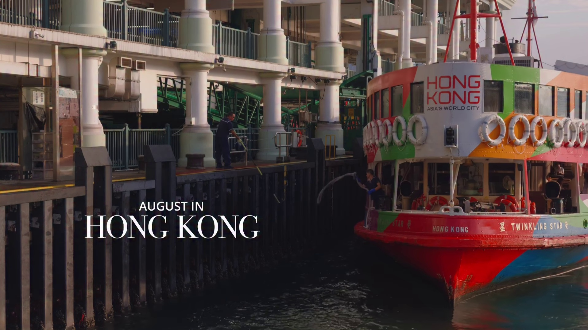
Keyframe Chính (1.18s)
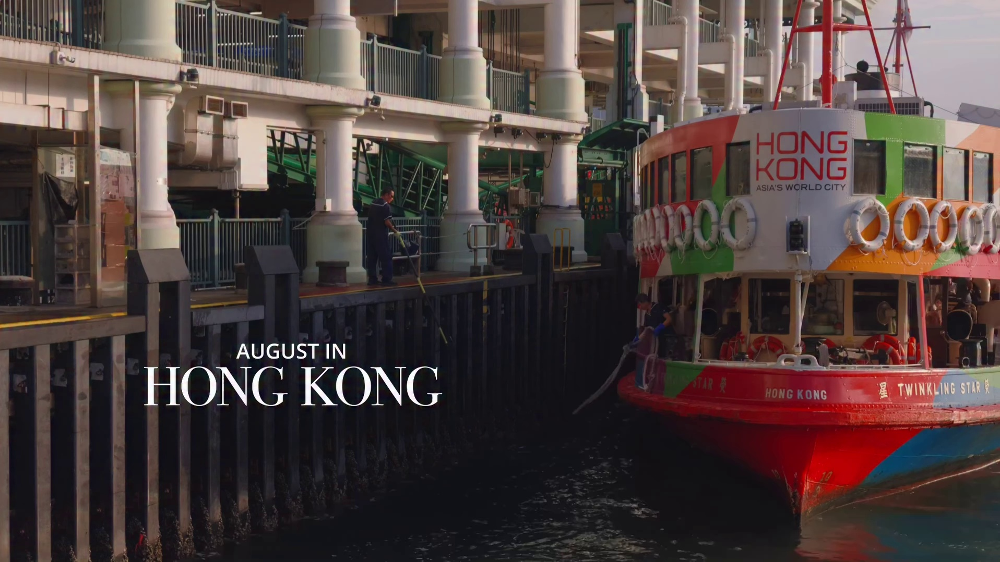
Đầu Cảnh (0.0s)
Medium Wide Shot (MWS) / Establishing Hook Shot
Chiếc phà biểu tượng Star Ferry màu đỏ xanh mang dòng chữ 'Hong Kong - Asia's World City' rẽ sóng cập bến cảng dưới ánh nắng hè trong trẻo. Cầu cảng màu xanh ngọc với kết cấu kim loại đặc trưng làm tiền cảnh bên trái. Dòng chữ Title 'AUGUST IN HONG KONG' xuất hiện trang trọng tạo điểm nhấn thị giác đầu tiên (Hook).
⇆ So Sánh Chuyển Cảnh: Shot 01 (Out) → Shot 02 (In)
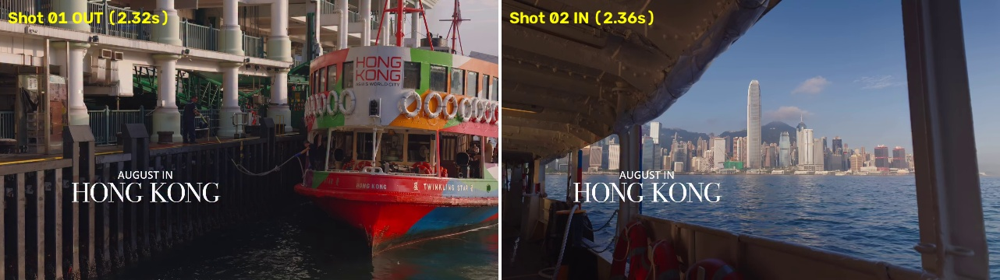
Cảnh 2: Khung cửa sổ khoang phà hướng ra vịnh Victoria & Tháp IFC (Frame in Frame)
[02.36s - 04.44s] (2.12s)
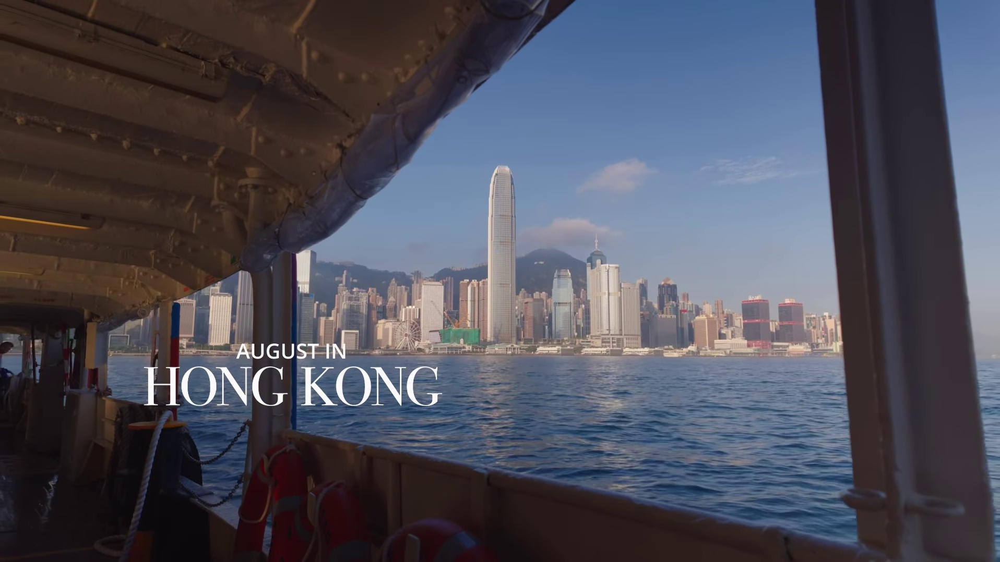
Keyframe Chính (3.42s)
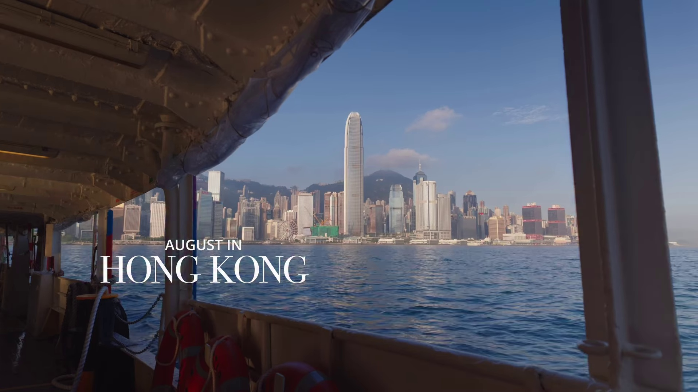
Đầu Cảnh (2.36s)
Wide Shot (WS) - Frame within a Frame
Góc nhìn từ bên trong khoang hành khách của phà Star Ferry, được đóng khung nghệ thuật bởi cột phà và trần gỗ màu xanh rêu. Bên ngoài là đường chân trời vịnh Victoria với tòa tháp IFC sừng sững vươn lên giữa nền trời trong xanh và mặt nước lấp lánh.
⇆ So Sánh Chuyển Cảnh: Shot 02 (Out) → Shot 03 (In)
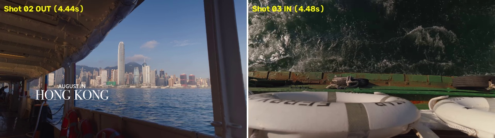
Cảnh 3: Luồng bọt sóng cuộn trào & Phao cứu sinh FERRY (Sensory Ocean Motion)
[04.48s - 06.64s] (2.2s)
Keyframe Chính (5.58s)
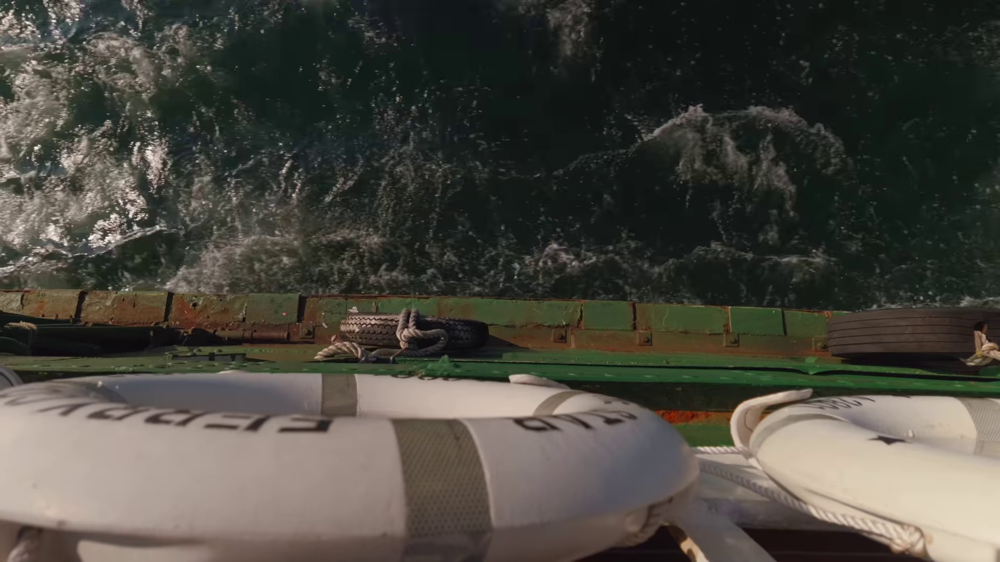
Đầu Cảnh (4.48s)
Medium Close-Up (MCU) - Layered Foreground & Texture
Đặc tả chiếc phao cứu sinh tròn màu trắng có dập nổi chữ 'FERRY' ở tiền cảnh, hậu cảnh là luồng nước biển cuộn trào bọt trắng xóa do chân vịt của phà tạo ra khi tăng tốc lướt trên sóng.
⇆ So Sánh Chuyển Cảnh: Shot 03 (Out) → Shot 04 (In)
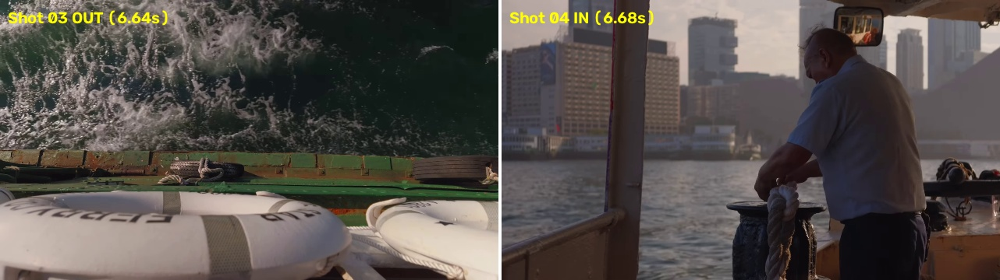
Cảnh 4: Người thủy thủ già buộc dây neo phà (Sailor Silhouette & Golden Rim)
[06.68s - 08.84s] (2.2s)
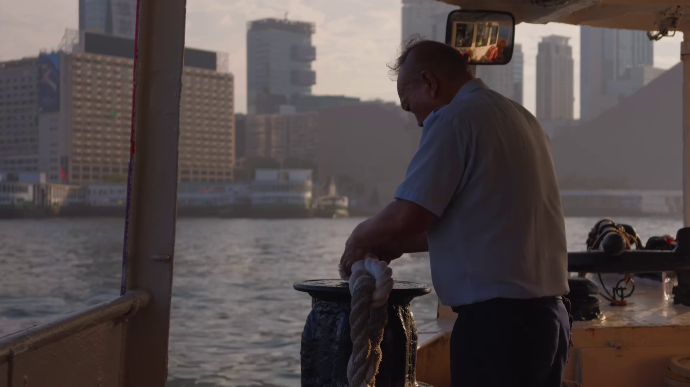
Keyframe Chính (7.78s)
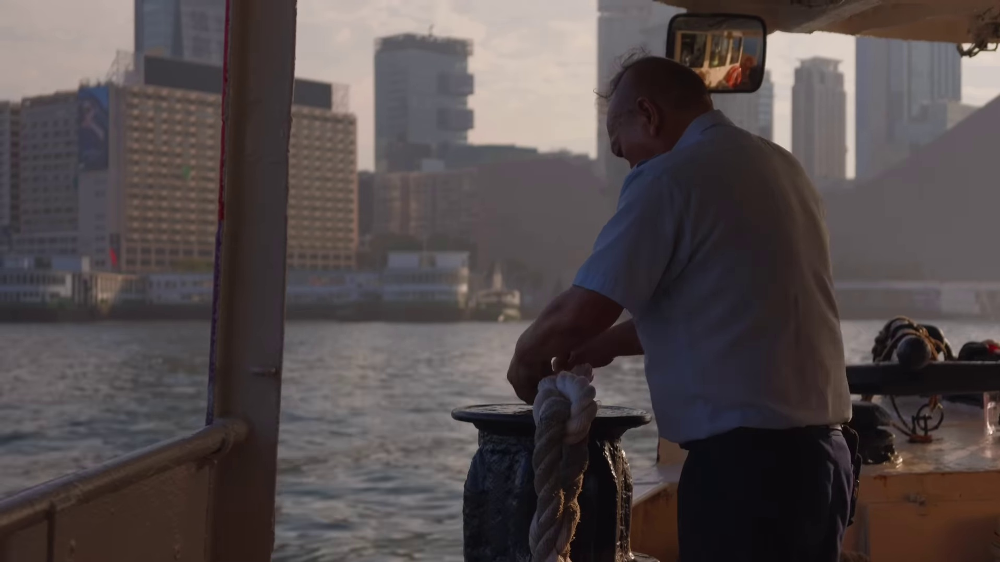
Đầu Cảnh (6.68s)
Medium Shot (MS) - Over-The-Shoulder / Human Touch
Người thủy thủ kỳ cựu mặc áo sơ mi xanh nhạt, quay lưng về phía ống kính, đôi bàn tay gân guốc thoăn thoắt buộc dây thừng vào cọc bích gỗ. Hậu cảnh mờ ảo là đường chân trời thành phố phủ ánh nắng chiều ngược sáng.
⇆ So Sánh Chuyển Cảnh: Shot 04 (Out) → Shot 05 (In)
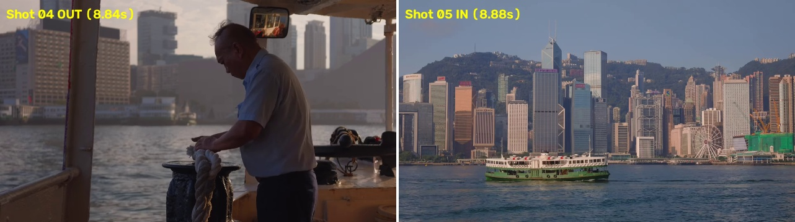
Cảnh 5: Đại toàn cảnh vịnh Victoria & Chiếc phà xanh lướt sóng (Grand Skyline Panorama)
[08.88s - 10.84s] (2.0s)
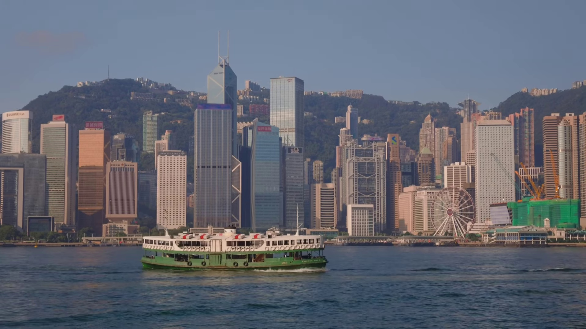
Keyframe Chính (9.88s)
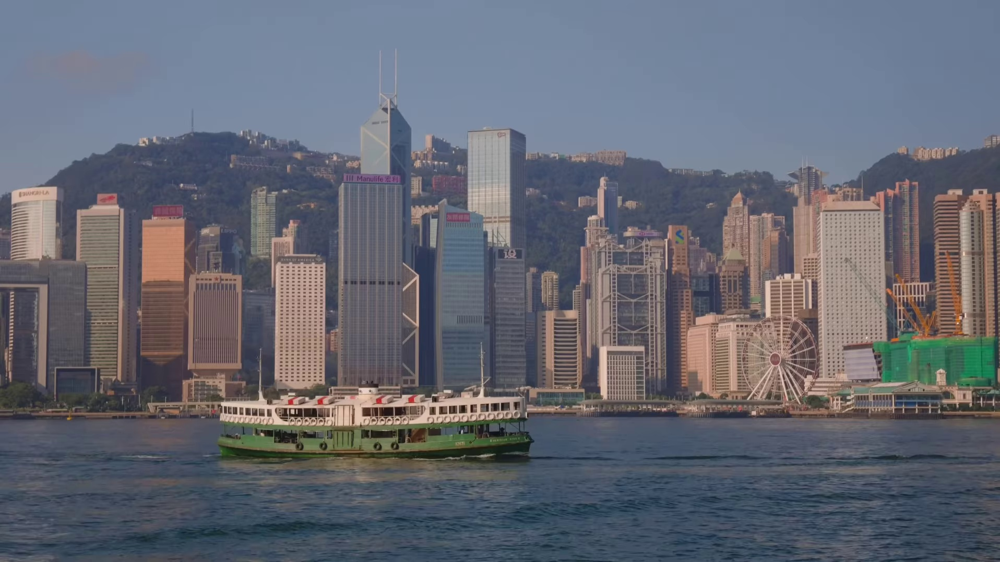
Đầu Cảnh (8.88s)
Extreme Long Shot (ELS) - Classic Cityscape Establishing
Đại toàn cảnh vịnh Victoria hùng vĩ với chiếc phà Star Ferry 2 tầng màu xanh lá biểu tượng đang rẽ sóng ở chính giữa khung hình. Phía sau là toàn bộ dãy cao ốc biểu tượng của đảo Hong Kong tựa lưng vào dãy núi The Peak xanh ngắt.
⇆ So Sánh Chuyển Cảnh: Shot 05 (Out) → Shot 06 (In)
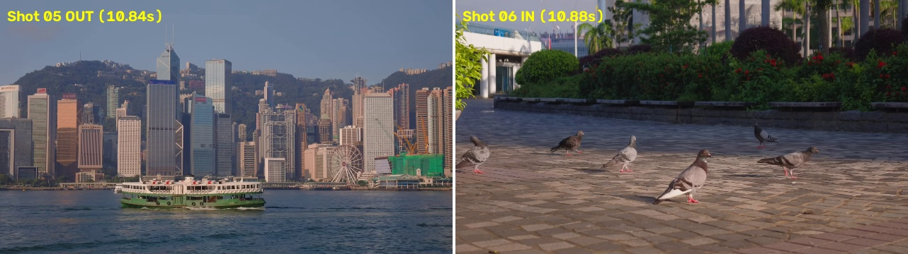
Cảnh 6: Đàn chim bồ câu trong bóng râm công viên (Ground Angle & Dappled Light)
[10.88s - 12.72s] (1.88s)
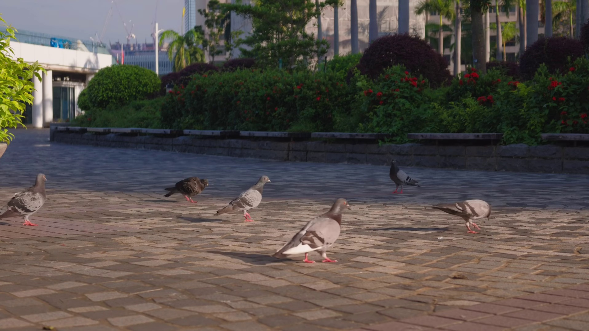
Keyframe Chính (11.82s)
Đầu Cảnh (10.88s)
Ground Low Angle / Micro Lifestyle Detail
Góc máy đặt sát mặt đất lát gạch công viên ngập tràn các đốm nắng xiên qua tán cây, đặc tả đàn chim bồ câu đang mổ hạt và rảo bước thong thả trong một buổi sáng bình yên.
⇆ So Sánh Chuyển Cảnh: Shot 06 (Out) → Shot 07 (In)
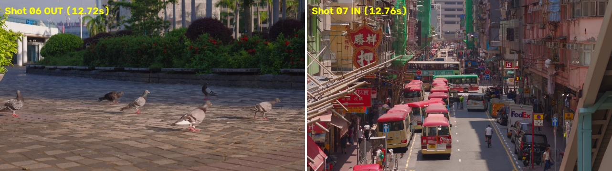
Cảnh 7: Đoàn xe Minibus đỏ nối đuôi giữa hẻm phố sầm uất (Hong Kong Red Minibuses)
[12.76s - 14.52s] (1.8s)
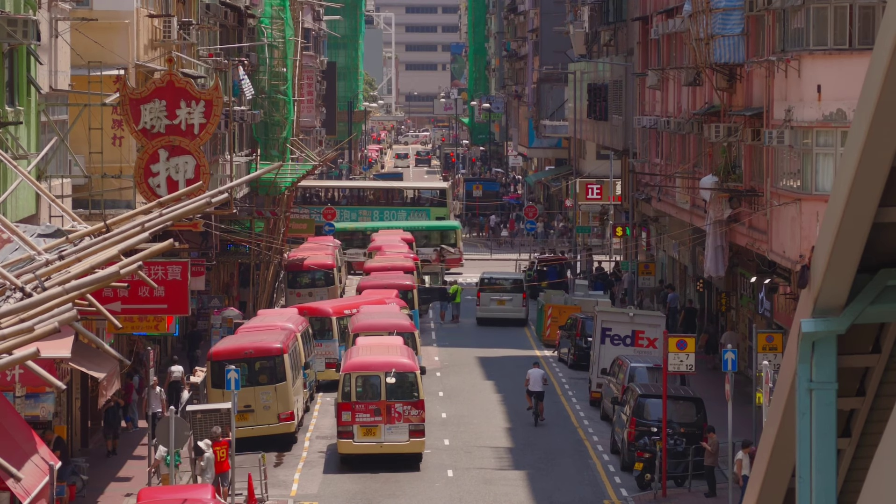
Keyframe Chính (13.66s)
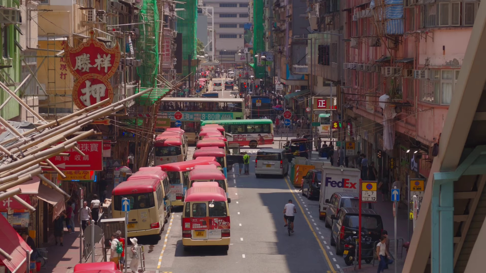
Đầu Cảnh (12.76s)
High Angle Telephoto / Urban Compression
Góc nhìn từ trên cầu bộ hành nhìn thẳng xuống con phố hẹp đặc trưng Hong Kong với những tòa chung cư cũ kỹ và biển hiệu neon chằng chịt. Đoàn xe buýt nhỏ minibus màu đỏ chạy nối đuôi nhau ngay ngắn giữa dòng xe cộ.
⇆ So Sánh Chuyển Cảnh: Shot 07 (Out) → Shot 08 (In)
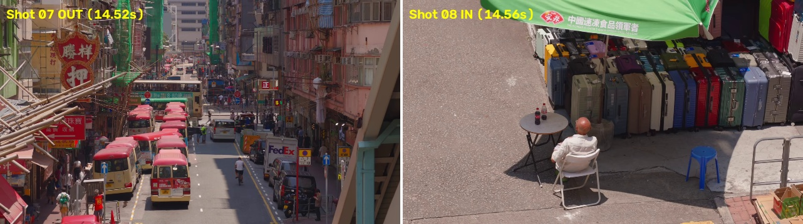
Cảnh 8: Người đàn ông ngồi nghỉ cạnh quầy vali hè phố (Street Stall Top-Down)
[14.56s - 16.32s] (1.8s)
Keyframe Chính (15.46s)
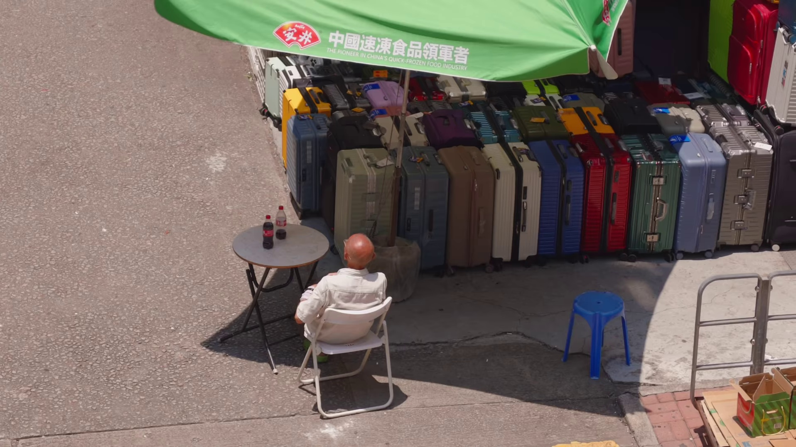
Đầu Cảnh (14.56s)
High Angle / Top-Down Observation Shot
Góc nhìn từ trên cao nhìn xuống một người đàn ông lớn tuổi mặc áo sơ mi trắng ngồi tựa lưng trên chiếc ghế xếp dưới bóng dù xanh, bên cạnh là hàng chục chiếc vali du lịch nhiều màu sắc xếp ngay ngắn bên vỉa hè đầy nắng.
⇆ So Sánh Chuyển Cảnh: Shot 08 (Out) → Shot 09 (In)
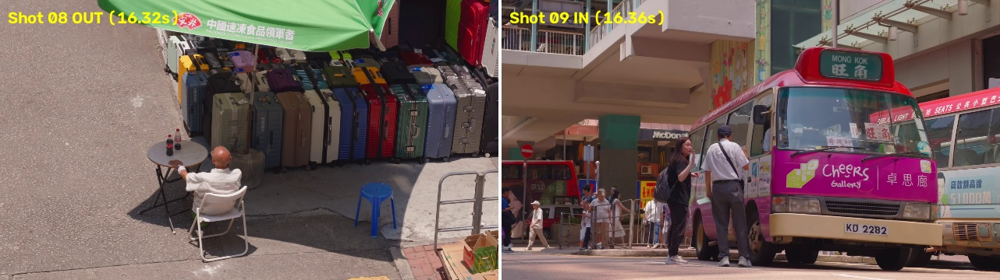
Cảnh 9: Minibus hồng Mong Kok đón khách dưới gầm cầu (Mong Kok Bus Interaction)
[16.36s - 18.48s] (2.16s)
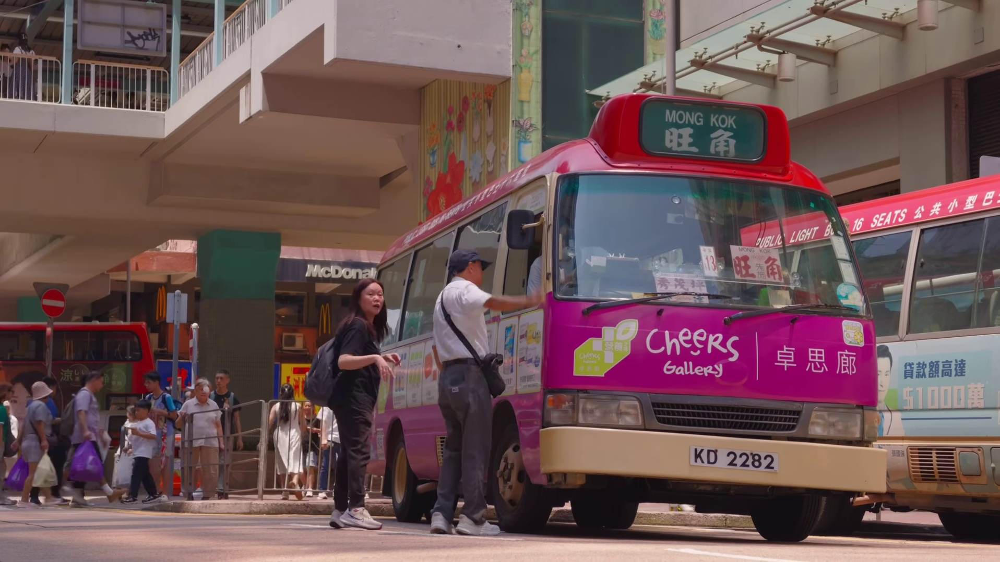
Keyframe Chính (17.44s)
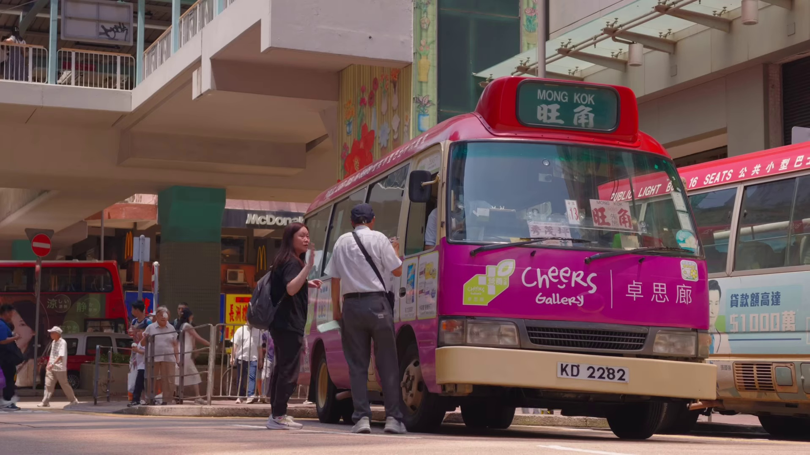
Đầu Cảnh (16.36s)
Medium Wide Shot (MWS) / Street Level Vignette
Chiếc xe minibus màu hồng magenta nổi bật với bảng LED đỏ 'MONG KOK 旺角' dừng đỗ bên lề đường dưới gầm cầu vượt. Tài xế đồng phục đang trao đổi hướng dẫn hành khách nữ trước khi bước lên xe.
⇆ So Sánh Chuyển Cảnh: Shot 09 (Out) → Shot 10 (In)
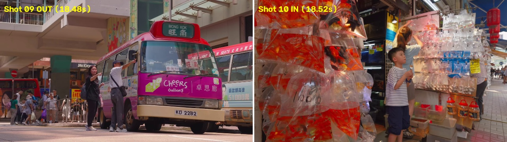
Cảnh 10: Bức tường bọc cá vàng lấp lánh tại Tung Choi Street (Goldfish Market Magic)
[18.52s - 20.44s] (1.96s)
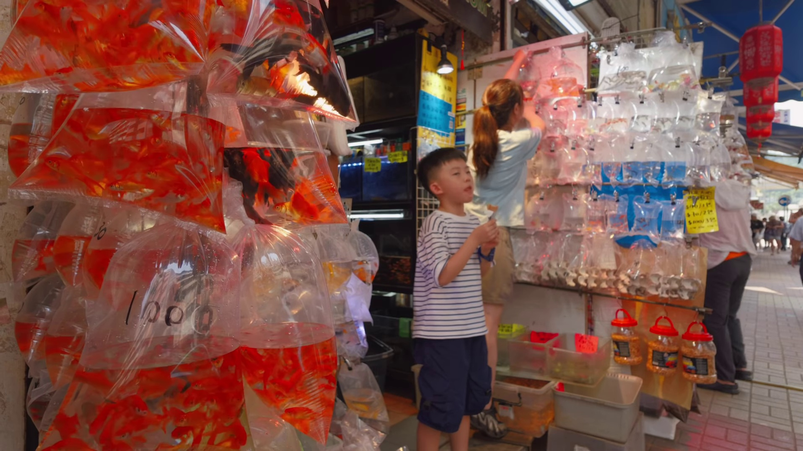
Keyframe Chính (19.50s)
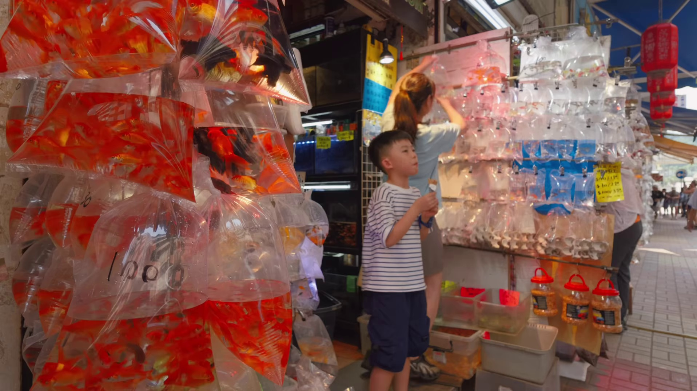
Đầu Cảnh (18.52s)
Medium Shot (MS) / Iconic Hong Kong Culture
Khung cảnh kinh điển tại Phố Cá Vàng (Tung Choi Street) với hàng trăm túi nilon trong suốt chứa đầy cá vàng đỏ rực được treo san sát thành một bức tường ánh sáng lung linh. Một cậu bé mặc áo sọc đang đứng chỉ tay ngắm nhìn đầy thích thú.
⇆ So Sánh Chuyển Cảnh: Shot 10 (Out) → Shot 11 (In)
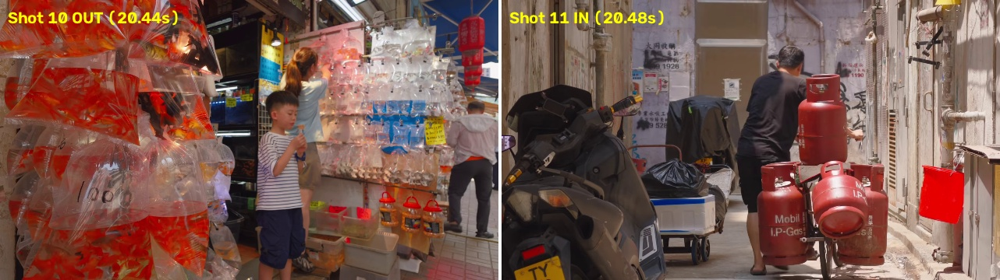
Cảnh 11: Người đàn ông dắt xe thồ 3 bình gas đỏ trong hẻm sâu (Alleyway One-Point Perspective)
[20.48s - 22.68s] (2.24s)
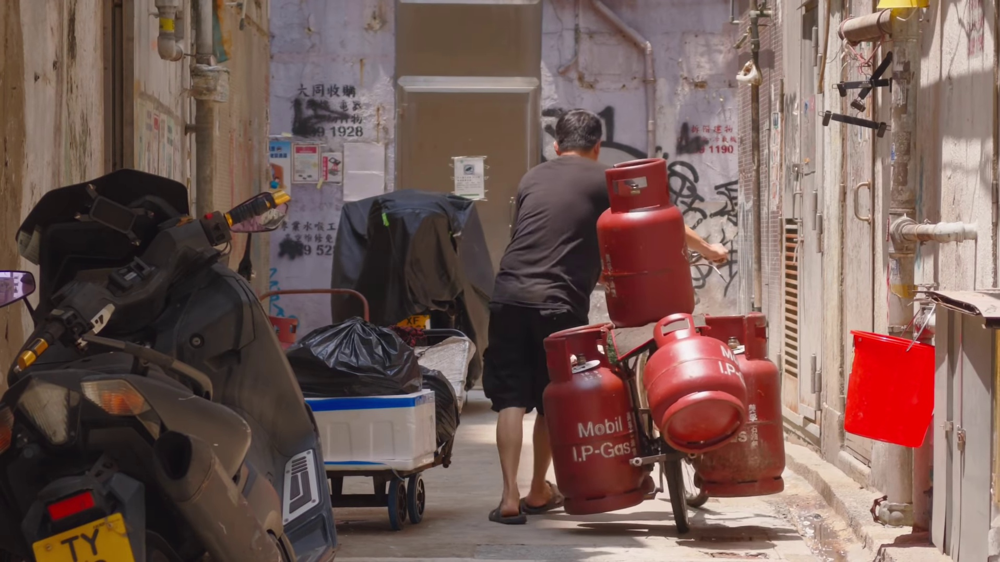
Keyframe Chính (21.60s)
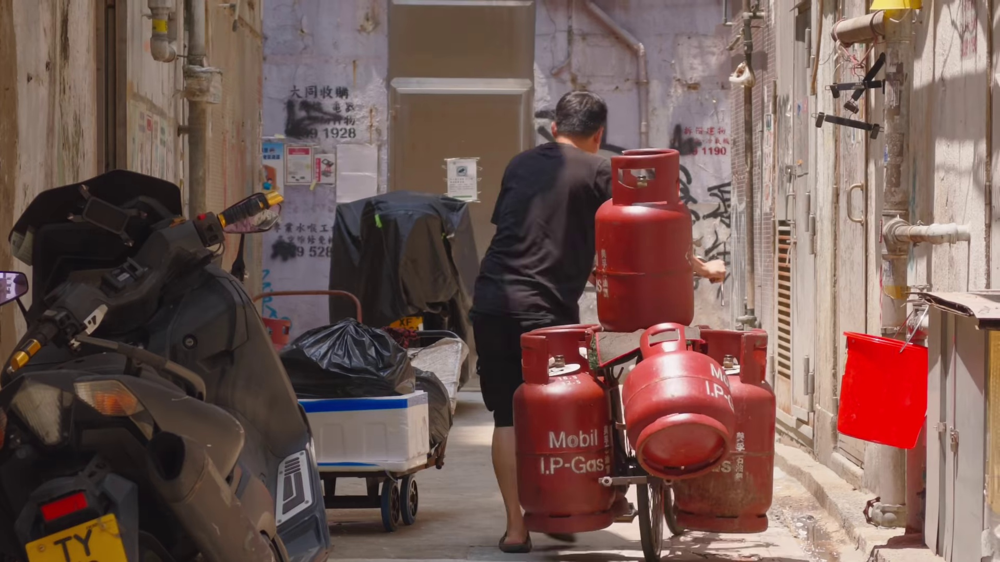
Đầu Cảnh (20.48s)
Deep Focus / One-Point Perspective Alley Shot
Bố cục phối cảnh hút sâu một điểm tụ vào con hẻm nhỏ hẹp chằng chịt dây điện và biển quảng cáo cũ. Người đàn ông mặc áo đen đang đẩy chiếc xe đạp thồ chở 3 bình gas đỏ rực bước đi vào sâu trong ngõ nhỏ.
⇆ So Sánh Chuyển Cảnh: Shot 11 (Out) → Shot 12 (In)
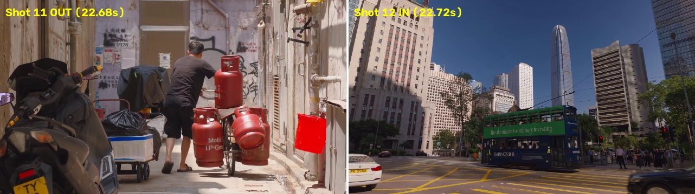
Cảnh 12: Xe điện hai tầng Ding Ding & Tòa tháp Two IFC chọc trời (Central Urban Symphony)
[22.72s - 24.68s] (2.0s)
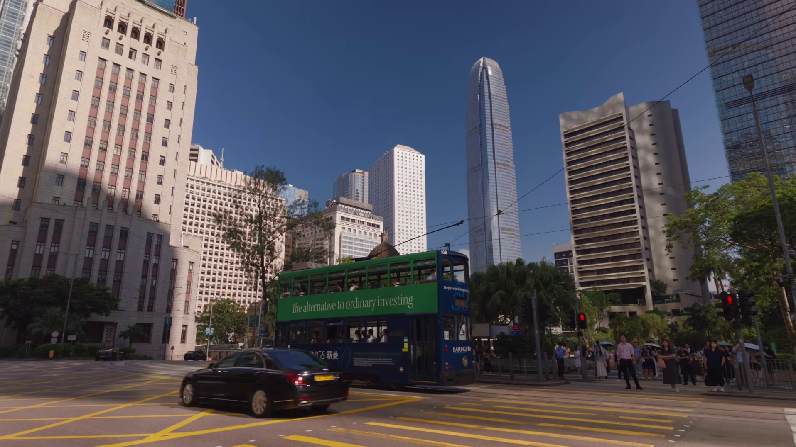
Keyframe Chính (23.72s)
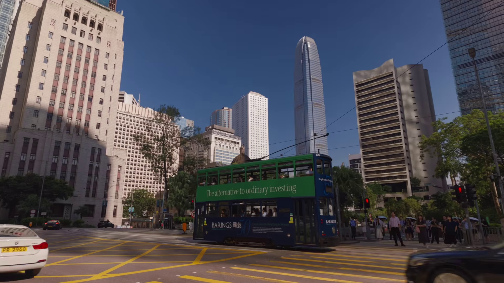
Đầu Cảnh (22.72s)
Low Angle Wide Shot / Modern & Heritage Juxtaposition
Ngã tư trung tâm Central với chiếc xe điện 2 tầng màu xanh lá đậm (Ding Ding Tram) mang tính biểu tượng đang từ từ rẽ góc. Phía sau là tòa tháp chọc trời Two IFC vươn thẳng đứng lên bầu trời xanh biếc không một gợn mây.
⇆ So Sánh Chuyển Cảnh: Shot 12 (Out) → Shot 13 (In)
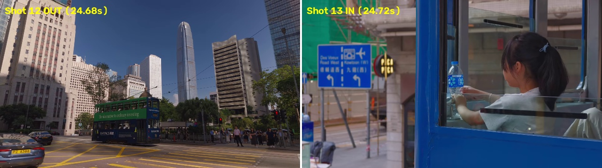
Cảnh 13: Thiếu nữ bên khung cửa sổ xe điện Ding Ding (Nostalgic Tram Commute)
[24.72s - 26.84s] (2.16s)
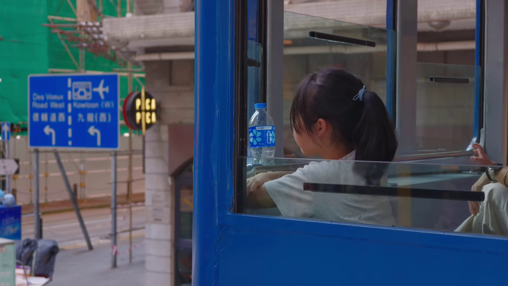
Keyframe Chính (25.80s)
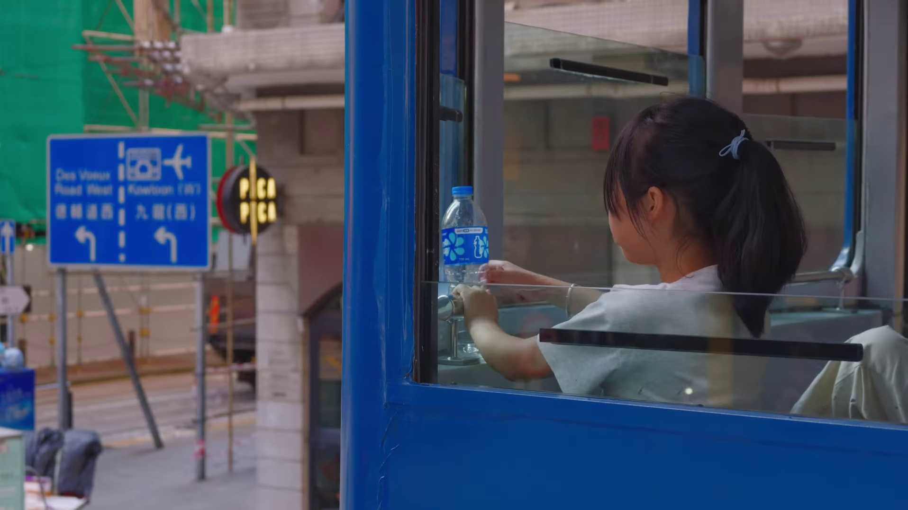
Đầu Cảnh (24.72s)
Medium Close-Up (MCU) / Profile Perspective & Emotional Pause
Góc máy cận cảnh bên ngoài cửa sổ xe điện Ding Ding màu xanh lam, bắt trọn khoảnh khắc một cô gái trẻ buộc tóc đuôi ngựa ngồi tựa cằm tĩnh lặng nhìn ngắm phố xá lướt qua. Phía sau là tấm biển chỉ đường xanh 'Des Voeux Road West'.
⇆ So Sánh Chuyển Cảnh: Shot 13 (Out) → Shot 14 (In)
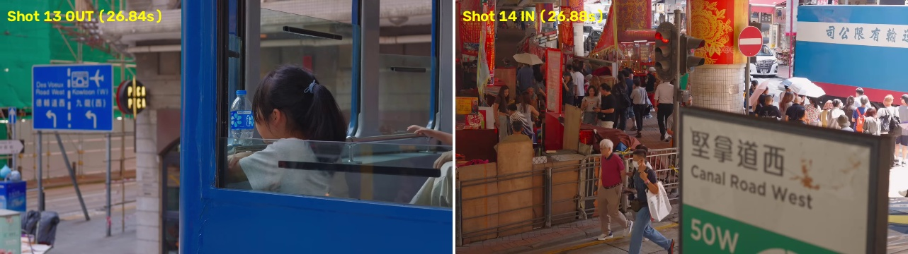
Cảnh 14: Biển phố Canal Road West & Dòng người tấp nập Wan Chai (Street Sign Anchor)
[26.88s - 28.96s] (2.12s)
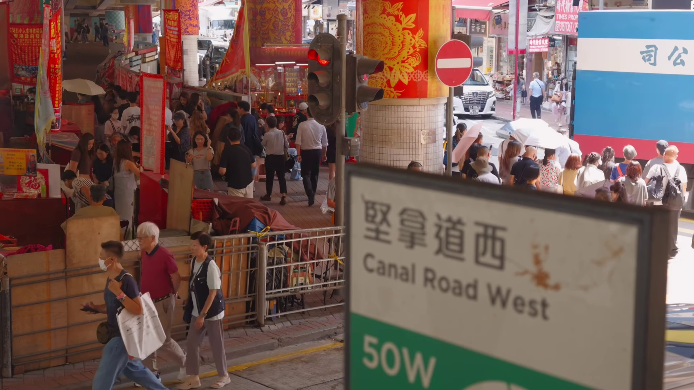
Keyframe Chính (27.94s)
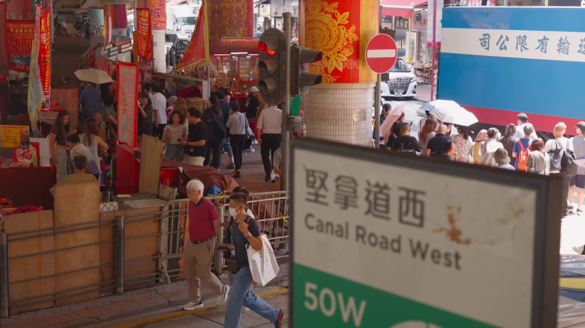
Đầu Cảnh (26.88s)
Medium Shot (MS) - Foreground Signpost & Busy Pedestrians
Tiền cảnh bên phải là tấm biển chỉ dẫn đường phố màu xanh lá '堅拿道西 / Canal Road West 50W'. Trung cảnh và hậu cảnh là dòng người đi bộ nhộn nhịp đan xen qua lại dưới gầm cầu vượt Wan Chai nơi diễn ra những nét văn hóa dân gian lâu đời.
⇆ So Sánh Chuyển Cảnh: Shot 14 (Out) → Shot 15 (In)
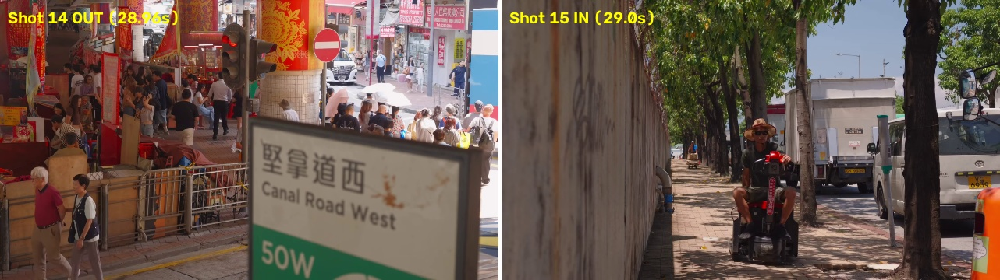
Cảnh 15: Con đường rợp bóng cây chiều hè & Người đàn ông xe lăn (Summer Tree Shadows)
[29.00s - 31.40s] (2.44s)
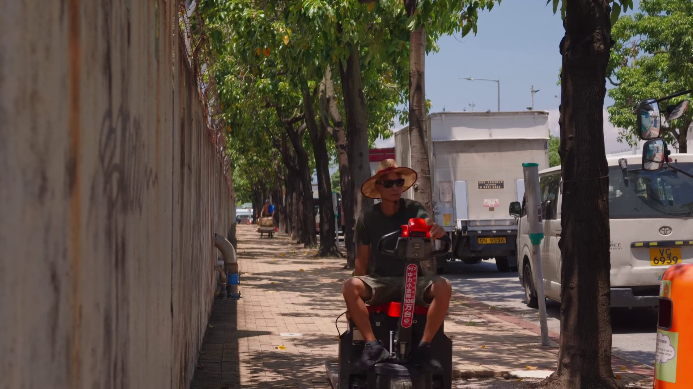
Keyframe Chính (30.22s)
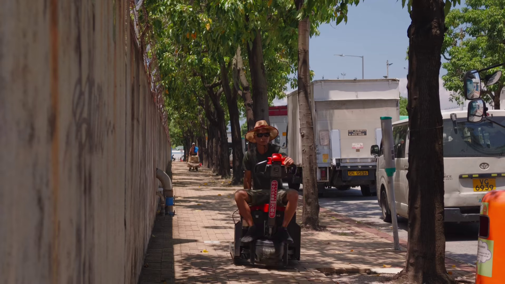
Đầu Cảnh (29.0s)
Long Shot / One-Point Perspective Street Tracking
Hàng cây cổ thụ xanh mát chạy dài dọc theo con đường lát gạch, ánh nắng chiều chiếu xiên qua kẽ lá tạo thành những vệt bóng đổ dài (Dappled Shadows). Một người đàn ông đội mũ nan đeo kính râm đang điều khiển xe lăn điện tiến thẳng về phía máy quay.
⇆ So Sánh Chuyển Cảnh: Shot 15 (Out) → Shot 16 (In)
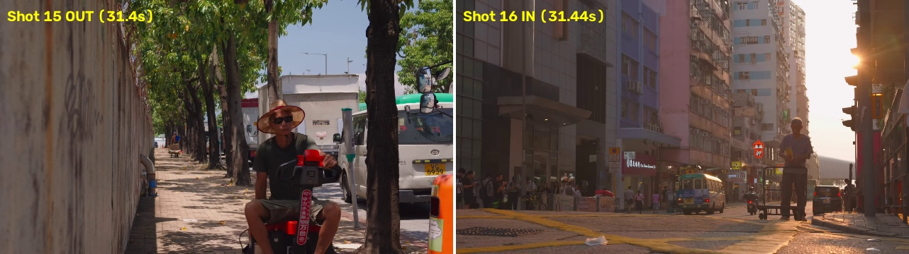
Cảnh 16: Vệt xe hơi vụt qua tiền cảnh lúc hoàng hôn (Whip Motion Wipe Transition)
[31.44s - 32.12s] (0.72s)
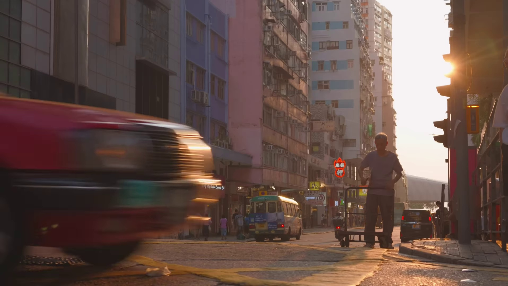
Keyframe Chính (31.80s)
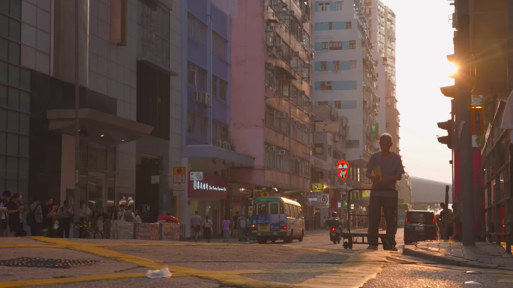
Đầu Cảnh (31.44s)
Medium Shot / Foreground Motion Blur Wipe (Fast 0.72s Cut)
Một cú cắt siêu nhanh (0.72 giây) với chiếc taxi đỏ/đen phóng vụt qua tiền cảnh làm mờ nhoè khung hình (Motion Blur), hé lộ bóng dáng người phu xe kéo đứng giữa con phố trong ánh hoàng hôn rực lửa.
⇆ So Sánh Chuyển Cảnh: Shot 16 (Out) → Shot 17 (In)

Cảnh 17: Toàn cảnh hoàng hôn vàng rực & Nhịp sống bình yên Hong Kong (Golden Sunset Climax & Outro)
[32.16s - 36.96s] (4.84s)
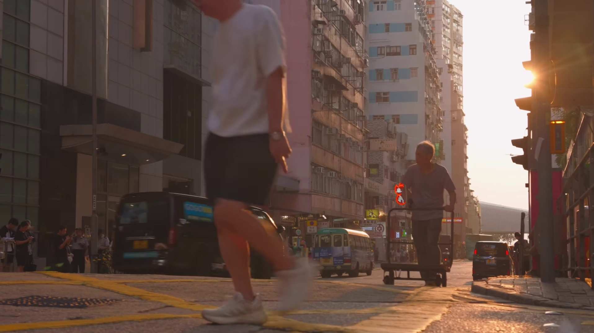
Keyframe Chính (34.58s)
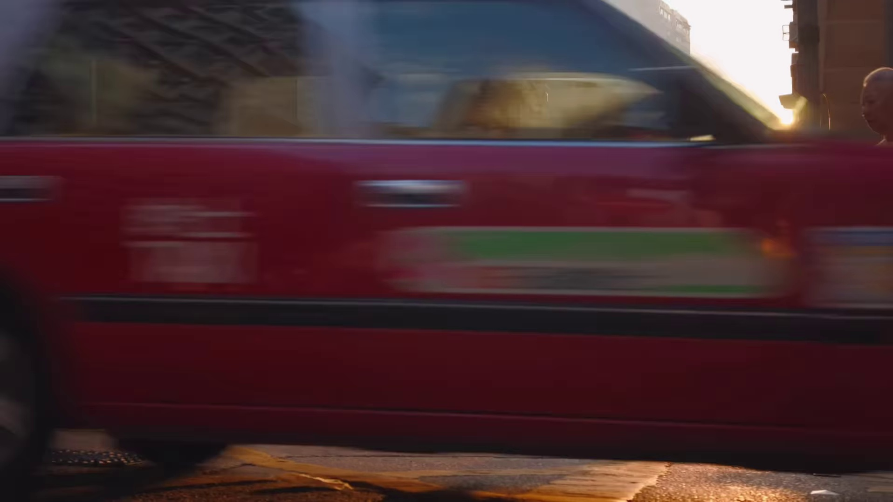
Đầu Cảnh (32.16s)
Telephoto Long Shot / Master Cinematic Climax Sunset
Con phố cổ kính Hong Kong chìm trong ánh hoàng hôn vàng cam đỏ rực (Golden Hour). Người phu già đẩy xe thồ bước chậm rãi dọc con dốc, một thanh niên áo trắng bước băng qua đường ở tiền cảnh. Ánh mặt trời chiếu xuyên qua khe giữa hai dãy nhà chung cư tạo thành quầng sáng hào quang (Golden Glow/Halation) huyền ảo bao bọc toàn bộ khung cảnh.
2. Phương Án Kịch Bản Lời Thoại (Shooting & Voiceover Scripts)
Tối ưu cho giọng đọc truyền cảm hứng
Phương án 1: Kịch bản Tự Sự Điện Ảnh - 'Tháng Tám, Hong Kong và Những Nhịp Thở Khẽ'
Tone & Mood: Trầm ấm, chiêm nghiệm, giàu chất thơ, phù hợp nhạc lo-fi / indie acoustic hoài niệm.
| Mốc Thời Gian / Phân Cảnh | Lời Thoại Lồng Tiếng (Voiceover Script) |
|---|---|
| 00.00s - 06.64s (Shot 1 - 3) | Người ta thường nhớ về Hong Kong qua những tòa cao ốc chọc trời hay ánh đèn neon rực rỡ... Nhưng với tôi, tháng Tám ở đây lại bắt đầu bằng một chuyến phà Star Ferry 5 đô bồng bềnh giữa sóng biển Victoria. |
| 06.68s - 14.52s (Shot 4 - 7) | Ở nơi này, có một nhịp sống khác rất khẽ. Là đôi bàn tay chai sần của người thủy thủ già buộc dây neo... là đàn chim bồ câu thong thả mổ thóc bên thềm công viên... và những chuyến minibus đỏ nối đuôi nhau qua từng góc phố cũ. |
| 14.56s - 22.68s (Shot 8 - 11) | Tháng Tám là vạt nắng xiên đổ dài trên chiếc ghế xếp của bác bán vali... là hàng trăm bọc cá vàng lấp lánh như ngàn ánh sao ở phố Tung Choi... và mùi khói bếp thân quen len lỏi qua từng con hẻm nhỏ. |
| 22.72s - 31.40s (Shot 12 - 15) | Bạn chỉ cần bước lên một chuyến xe điện Ding Ding, tựa đầu bên khung cửa sổ gỗ, để gió lướt qua tóc và ngắm nhìn dòng người trôi đi chậm rãi... |
| 31.44s - 37.00s (Shot 16 - 17) | Để rồi khi hoàng hôn buông xuống, nhuộm vàng cả một góc phố... bạn sẽ nhận ra, Hong Kong không chỉ là một điểm đến, mà là một cảm xúc chẳng thể nào quên. |
Phương án 2: Kịch bản Hướng Dẫn Du Lịch Trải Nghiệm & Góc Nhìn Nhiếp Ảnh Đường Phố
Tone & Mood: Hào hứng, chia sẻ kinh nghiệm thực tế, nhịp điệu trẻ trung, cuốn hút.
| Mốc Thời Gian / Phân Cảnh | Lời Thoại Lồng Tiếng (Voiceover Script) |
|---|---|
| 00.00s - 06.64s (Shot 1 - 3) | Nếu bạn chỉ có đúng 24 giờ để cảm nhận trọn vẹn chất điện ảnh của Hong Kong vào tháng Tám, đây là hành trình dành riêng cho bạn! |
| 06.68s - 14.52s (Shot 4 - 7) | Bắt đầu buổi sáng từ bến phà Star Ferry ngắm trọn vẹn đường chân trời vịnh Victoria, sau đó bắt chuyến Minibus đỏ khám phá những con phố cổ Kowloon rực rỡ sắc màu. |
| 14.56s - 22.68s (Shot 8 - 11) | Đừng quên ghé qua Phố Cá Vàng Tung Choi - nơi ánh sáng phản chiếu qua từng túi nước tạo nên những khung hình street photography đỉnh cao nhất thế giới. |
| 22.72s - 31.40s (Shot 15 - 15) | Và buổi chiều, hãy dành ra 3 đô Hong Kong để ngồi trên tầng hai của chiếc xe điện Ding Ding trăm tuổi, ngắm nhìn dòng người nhộn nhịp qua lại dưới chân cầu Canal Road. |
| 31.44s - 37.00s (Shot 16 - 17) | Hãy canh đúng 15 phút Golden Hour khi hoàng hôn chiếu xuyên qua các dãy chung cư cũ... Đó chính là khoảnh khắc bạn mang cả điện ảnh Hong Kong về nhà! |